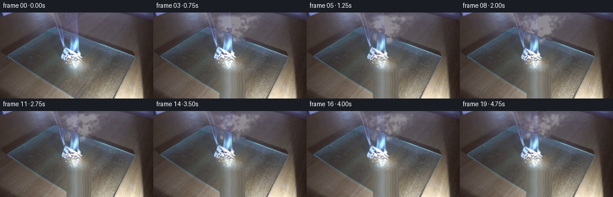
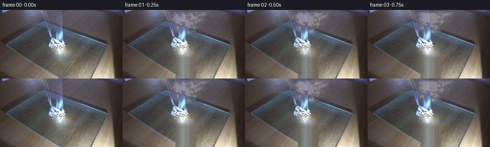
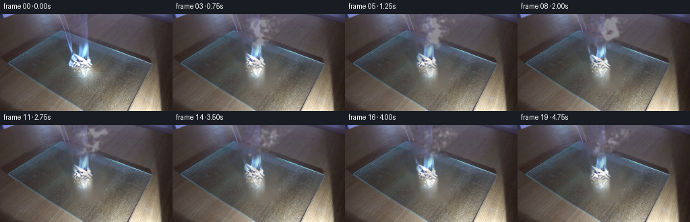
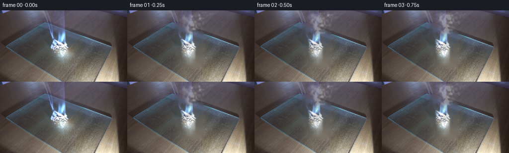
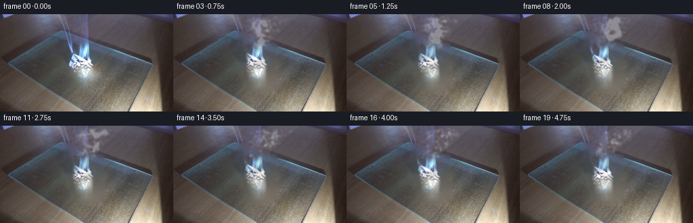
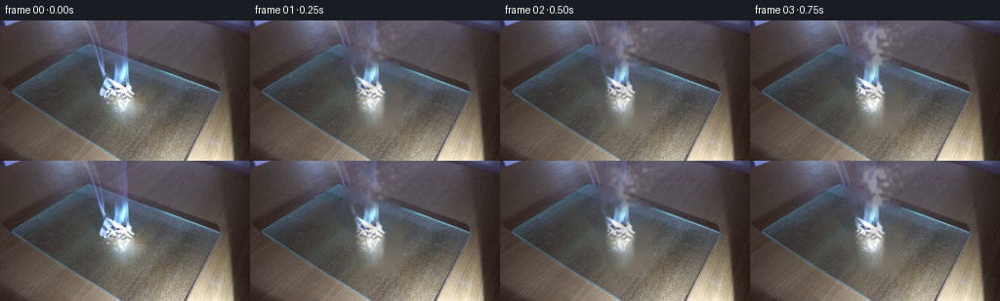

CODING AGENTS AS PIXEL WORLD MODELS
traex/DeepSeek-V4.1-Flash · 0141
点击播放 · 原生 RGB 像素
逐轮保存的候选
回放视频、检查图与代码变化。
每份候选均可单独播放。实际图片检查记录在下方工具轨迹中。
候选 01播放与检查图
点击播放 · 原生 RGB 像素


展开代码变化
--- 上一保存版本
+++ 本次保存版本
@@ -0,0 +1,219 @@
+from pathlib import Path
+
+import cv2
+import numpy as np
+from scipy.ndimage import gaussian_filter
+
+from artifact_io import save
+
+
+ROOT = Path(__file__).resolve().parent
+WIDTH, HEIGHT, FRAME_COUNT = 256, 144, 20
+
+
+def smoothstep(edge0, edge1, value):
+ value = np.clip((value - edge0) / (edge1 - edge0), 0.0, 1.0)
+ return value * value * (3.0 - 2.0 * value)
+
+
+def build_smoke_fields():
+ rng = np.random.default_rng(9182)
+ size = 512
+ fields = []
+ for sigma, weight in ((1.6, 0.50), (5.0, 0.31), (15.0, 0.19)):
+ field = gaussian_filter(rng.standard_normal((size, size)), sigma=sigma)
+ field = (field - field.mean()) / (field.std() + 1e-6)
+ fields.append((field.astype(np.float32), weight))
+ return fields
+
+
+def sample_smoke_noise(fields, time_index):
+ height, width = HEIGHT, WIDTH
+ y0 = 90
+ x0 = 70
+ combined = np.zeros((height, width), dtype=np.float32)
+ for field, weight in fields:
+ shifted = np.roll(
+ field,
+ shift=(-int(round(6.8 * time_index)), int(round(2.7 * time_index))),
+ axis=(0, 1),
+ )
+ combined += weight * shifted[y0 : y0 + height, x0 : x0 + width]
+ combined = (combined - combined.min()) / (combined.max() - combined.min() + 1e-6)
+ return combined
+
+
+def make_smoke(time_index, fields):
+ yy, xx = np.mgrid[0:HEIGHT, 0:WIDTH].astype(np.float32)
+ progress = np.clip((54.0 - yy) / 54.0, 0.0, 1.0)
+ phase = time_index * 0.19
+
+ center = (
+ 123.0
+ + 15.0 * progress
+ + 2.6 * np.sin(progress * 7.2 - phase)
+ + 1.2 * np.sin(progress * 14.0 + phase * 0.7)
+ )
+ width = 8.5 + 18.0 * progress
+ tube = np.exp(-0.5 * ((xx - center) / width) ** 2)
+
+ center2 = 132.0 + 31.0 * progress + 3.0 * np.sin(progress * 5.0 + phase * 0.8 + 0.7)
+ width2 = 5.0 + 13.0 * progress
+ tube2 = 0.34 * np.exp(-0.5 * ((xx - center2) / width2) ** 2)
+
+ top_fade = 1.0 - 0.18 * smoothstep(0.70, 1.0, progress)
+ base_gate = 1.0 - smoothstep(0.82, 1.0, progress)
+ envelope = (tube + tube2) * top_fade * base_gate
+
+ noise = sample_smoke_noise(fields, time_index)
+ fine = gaussian_filter(noise, 0.55)
+ texture = smoothstep(0.18, 0.84, fine)
+ breakup = smoothstep(0.26, 0.78, noise)
+ density = envelope * (0.16 + 0.84 * texture) * (0.72 + 0.28 * breakup)
+
+ rising = smoothstep(44.0, 55.0, yy)
+ density *= 1.0 - 0.92 * rising
+ density = gaussian_filter(density, 0.62)
+ density = np.clip(density * 1.35, 0.0, 1.0)
+ alpha = np.clip((density - 0.035) * 0.54, 0.0, 0.42)
+
+ warm = np.exp(-((yy - 49.0) / 8.0) ** 2) * np.exp(-((xx - 126.0) / 23.0) ** 2)
+ smoke_rgb = np.empty((HEIGHT, WIDTH, 3), dtype=np.float32)
+ smoke_rgb[..., 0] = 207.0 + 17.0 * warm
+ smoke_rgb[..., 1] = 211.0 + 11.0 * warm
+ smoke_rgb[..., 2] = 215.0 + 3.0 * warm
+ return smoke_rgb, alpha
+
+
+def build_flame_layers(image):
+ yy, xx = np.mgrid[0:HEIGHT, 0:WIDTH].astype(np.float32)
+ lum = 0.299 * image[..., 0] + 0.587 * image[..., 1] + 0.114 * image[..., 2]
+ spatial = np.exp(
+ -((xx - 123.0) / 27.0) ** 8 - ((yy - 74.0) / 42.0) ** 8
+ )
+ burn_roi = (
+ (xx >= 92)
+ & (xx <= 151)
+ & (yy >= 28)
+ & (yy <= 112)
+ & (spatial > 0.08)
+ & (lum > 103)
+ )
+ mask = burn_roi.astype(np.uint8)
+ mask = cv2.morphologyEx(mask, cv2.MORPH_CLOSE, np.ones((5, 5), np.uint8))
+ mask = cv2.dilate(mask, np.ones((3, 3), np.uint8), iterations=1)
+
+ inpaint_mask = cv2.dilate(mask, np.ones((5, 5), np.uint8), iterations=1)
+ plate_bgr = cv2.inpaint(
+ cv2.cvtColor(image.astype(np.uint8), cv2.COLOR_RGB2BGR),
+ inpaint_mask,
+ 7,
+ cv2.INPAINT_TELEA,
+ )
+ plate = cv2.cvtColor(plate_bgr, cv2.COLOR_BGR2RGB).astype(np.float32)
+
+ alpha = smoothstep(92.0, 181.0, lum) * spatial
+ alpha = np.maximum(alpha, mask.astype(np.float32) * 0.94)
+ alpha *= 0.97
+ return plate, image.astype(np.float32), alpha, mask
+
+
+def warp_flame(source_rgb, source_alpha, time_index):
+ yy, xx = np.mgrid[0:HEIGHT, 0:WIDTH].astype(np.float32)
+ phase = time_index * 0.33
+ base_y = 101.0
+ base_x = 123.0
+ height = np.maximum(base_y - yy, 0.0)
+
+ scale_y = 1.0 + 0.028 * np.sin(phase * 1.7) + 0.012 * np.sin(phase * 3.3 + 0.8)
+ scale_x = 1.0 + 0.035 * np.sin(phase * 1.35 + 0.4)
+ sway = (
+ 1.55 * np.sin(height / 11.0 - phase * 2.3)
+ + 0.72 * np.sin(height / 5.7 + phase * 3.1 + 0.6)
+ ) * smoothstep(4.0, 48.0, height)
+ center_x = base_x + sway
+
+ map_x = center_x - (center_x - xx) / scale_x
+ map_y = base_y - height / scale_y
+ map_x += 0.55 * np.sin(yy / 4.5 + phase * 2.1) * smoothstep(48.0, 82.0, yy)
+ map_y += 0.30 * np.sin(xx / 5.0 - phase * 1.8) * smoothstep(45.0, 78.0, yy)
+ map_x = map_x.astype(np.float32)
+ map_y = map_y.astype(np.float32)
+
+ warped_rgb = cv2.remap(
+ source_rgb,
+ map_x,
+ map_y,
+ interpolation=cv2.INTER_CUBIC,
+ borderMode=cv2.BORDER_CONSTANT,
+ borderValue=(0, 0, 0),
+ )
+ warped_alpha = cv2.remap(
+ source_alpha,
+ map_x,
+ map_y,
+ interpolation=cv2.INTER_LINEAR,
+ borderMode=cv2.BORDER_CONSTANT,
+ borderValue=0,
+ )
+ return warped_rgb, np.clip(warped_alpha, 0.0, 1.0)
+
+
+def render_frame(time_index, original, plate, flame_rgb, flame_alpha, smoke_fields):
+ if time_index == 0:
+ return original.copy()
+
+ frame = plate.copy()
+ yy, xx = np.mgrid[0:HEIGHT, 0:WIDTH].astype(np.float32)
+
+ smoke_rgb, smoke_alpha = make_smoke(time_index, smoke_fields)
+ frame = frame * (1.0 - smoke_alpha[..., None]) + smoke_rgb * smoke_alpha[..., None]
+
+ flicker = 1.0 + 0.035 * np.sin(time_index * 2.17) + 0.018 * np.sin(time_index * 4.73 + 0.7)
+ warm_light = np.exp(
+ -((xx - 125.0 - 1.5 * np.sin(time_index * 0.6)) / 31.0) ** 2
+ - ((yy - 83.0) / 42.0) ** 2
+ )
+ frame += warm_light[..., None] * np.array([4.0, 1.9, 0.5], dtype=np.float32) * flicker
+
+ warped_rgb, warped_alpha = warp_flame(flame_rgb, flame_alpha, time_index)
+ warped_rgb = np.clip(warped_rgb * flicker, 0.0, 255.0)
+ frame = frame * (1.0 - warped_alpha[..., None]) + warped_rgb * warped_alpha[..., None]
+
+ glow_alpha = cv2.GaussianBlur(warped_alpha, (0, 0), 4.2)
+ glow_alpha *= 0.10 * flicker
+ glow_rgb = np.empty_like(frame)
+ glow_rgb[..., 0] = 255.0
+ glow_rgb[..., 1] = 115.0
+ glow_rgb[..., 2] = 43.0
+ frame += glow_alpha[..., None] * glow_rgb * 0.25
+
+ rng = np.random.default_rng(400 + time_index)
+ grain = rng.normal(0.0, 0.72, (HEIGHT, WIDTH, 1)).astype(np.float32)
+ grain = gaussian_filter(grain, sigma=(0.35, 0.35, 0.0))
+ frame += grain
+ return np.clip(frame, 0.0, 255.0).round().astype(np.uint8)
+
+
+def main():
+ source = cv2.imread(str(ROOT / "first_frame.png"), cv2.IMREAD_COLOR)
+ if source is None:
+ raise FileNotFoundError(ROOT / "first_frame.png")
+ original = cv2.cvtColor(source, cv2.COLOR_BGR2RGB)
+ if original.shape != (HEIGHT, WIDTH, 3):
+ raise ValueError(f"Unexpected first-frame shape: {original.shape}")
+
+ plate, flame_rgb, flame_alpha, _ = build_flame_layers(original)
+ smoke_fields = build_smoke_fields()
+
+ frames = np.empty((FRAME_COUNT, HEIGHT, WIDTH, 3), dtype=np.uint8)
+ for index in range(FRAME_COUNT):
+ frames[index] = render_frame(
+ index, original, plate, flame_rgb, flame_alpha, smoke_fields
+ )
+ frames[0] = original
+ save(frames, ROOT)
+
+
+if __name__ == "__main__":
+ main()
候选 02播放与检查图
点击播放 · 原生 RGB 像素


展开代码变化
--- 上一保存版本
+++ 本次保存版本
@@ -50,38 +50,39 @@
center = (
123.0
- + 15.0 * progress
- + 2.6 * np.sin(progress * 7.2 - phase)
- + 1.2 * np.sin(progress * 14.0 + phase * 0.7)
- )
- width = 8.5 + 18.0 * progress
+ + 17.0 * progress
+ + 3.5 * np.sin(progress * 7.2 - phase)
+ + 1.4 * np.sin(progress * 14.0 + phase * 0.7)
+ )
+ width = 4.8 + 11.0 * progress
tube = np.exp(-0.5 * ((xx - center) / width) ** 2)
- center2 = 132.0 + 31.0 * progress + 3.0 * np.sin(progress * 5.0 + phase * 0.8 + 0.7)
- width2 = 5.0 + 13.0 * progress
- tube2 = 0.34 * np.exp(-0.5 * ((xx - center2) / width2) ** 2)
-
- top_fade = 1.0 - 0.18 * smoothstep(0.70, 1.0, progress)
+ center2 = 131.0 + 34.0 * progress + 3.8 * np.sin(progress * 5.0 + phase * 0.8 + 0.7)
+ width2 = 2.8 + 8.0 * progress
+ tube2 = 0.27 * np.exp(-0.5 * ((xx - center2) / width2) ** 2)
+
+ top_fade = 1.0 - 0.12 * smoothstep(0.68, 1.0, progress)
base_gate = 1.0 - smoothstep(0.82, 1.0, progress)
envelope = (tube + tube2) * top_fade * base_gate
noise = sample_smoke_noise(fields, time_index)
fine = gaussian_filter(noise, 0.55)
texture = smoothstep(0.18, 0.84, fine)
- breakup = smoothstep(0.26, 0.78, noise)
- density = envelope * (0.16 + 0.84 * texture) * (0.72 + 0.28 * breakup)
+ breakup = smoothstep(0.38, 0.82, noise)
+ wisps = smoothstep(0.58, 0.90, fine)
+ density = envelope * (0.06 + 0.72 * texture + 0.22 * wisps) * (0.48 + 0.52 * breakup)
rising = smoothstep(44.0, 55.0, yy)
density *= 1.0 - 0.92 * rising
- density = gaussian_filter(density, 0.62)
- density = np.clip(density * 1.35, 0.0, 1.0)
- alpha = np.clip((density - 0.035) * 0.54, 0.0, 0.42)
+ density = gaussian_filter(density, 0.48)
+ density = np.clip(density * 1.55, 0.0, 1.0)
+ alpha = np.clip((density - 0.055) * 0.58, 0.0, 0.47)
warm = np.exp(-((yy - 49.0) / 8.0) ** 2) * np.exp(-((xx - 126.0) / 23.0) ** 2)
smoke_rgb = np.empty((HEIGHT, WIDTH, 3), dtype=np.float32)
- smoke_rgb[..., 0] = 207.0 + 17.0 * warm
- smoke_rgb[..., 1] = 211.0 + 11.0 * warm
- smoke_rgb[..., 2] = 215.0 + 3.0 * warm
+ smoke_rgb[..., 0] = 197.0 + 24.0 * warm
+ smoke_rgb[..., 1] = 203.0 + 15.0 * warm
+ smoke_rgb[..., 2] = 208.0 + 6.0 * warm
return smoke_rgb, alpha
@@ -128,15 +129,15 @@
scale_y = 1.0 + 0.028 * np.sin(phase * 1.7) + 0.012 * np.sin(phase * 3.3 + 0.8)
scale_x = 1.0 + 0.035 * np.sin(phase * 1.35 + 0.4)
sway = (
- 1.55 * np.sin(height / 11.0 - phase * 2.3)
- + 0.72 * np.sin(height / 5.7 + phase * 3.1 + 0.6)
+ 2.10 * np.sin(height / 11.0 - phase * 2.3)
+ + 1.00 * np.sin(height / 5.7 + phase * 3.1 + 0.6)
) * smoothstep(4.0, 48.0, height)
center_x = base_x + sway
map_x = center_x - (center_x - xx) / scale_x
map_y = base_y - height / scale_y
- map_x += 0.55 * np.sin(yy / 4.5 + phase * 2.1) * smoothstep(48.0, 82.0, yy)
- map_y += 0.30 * np.sin(xx / 5.0 - phase * 1.8) * smoothstep(45.0, 78.0, yy)
+ map_x += 0.78 * np.sin(yy / 4.5 + phase * 2.1) * smoothstep(48.0, 82.0, yy)
+ map_y += 0.42 * np.sin(xx / 5.0 - phase * 1.8) * smoothstep(45.0, 78.0, yy)
map_x = map_x.astype(np.float32)
map_y = map_y.astype(np.float32)
@@ -156,6 +157,12 @@
borderMode=cv2.BORDER_CONSTANT,
borderValue=0,
)
+ envelope = np.exp(
+ -((xx - center_x) / (13.0 + 0.07 * height)) ** 8
+ -((yy - 77.0) / 31.0) ** 8
+ )
+ licks = 0.89 + 0.11 * np.sin(yy / 3.8 + xx / 6.4 - phase * 2.8)
+ warped_alpha *= envelope * licks
return warped_rgb, np.clip(warped_alpha, 0.0, 1.0)
@@ -181,7 +188,7 @@
frame = frame * (1.0 - warped_alpha[..., None]) + warped_rgb * warped_alpha[..., None]
glow_alpha = cv2.GaussianBlur(warped_alpha, (0, 0), 4.2)
- glow_alpha *= 0.10 * flicker
+ glow_alpha *= 0.16 * flicker
glow_rgb = np.empty_like(frame)
glow_rgb[..., 0] = 255.0
glow_rgb[..., 1] = 115.0
候选 03播放与检查图
点击播放 · 原生 RGB 像素


展开代码变化
--- 上一保存版本
+++ 本次保存版本
@@ -76,7 +76,8 @@
density *= 1.0 - 0.92 * rising
density = gaussian_filter(density, 0.48)
density = np.clip(density * 1.55, 0.0, 1.0)
- alpha = np.clip((density - 0.055) * 0.58, 0.0, 0.47)
+ start_ease = 0.34 + 0.66 * smoothstep(0.0, 4.5, float(time_index))
+ alpha = np.clip((density - 0.055) * 0.58 * start_ease, 0.0, 0.47)
warm = np.exp(-((yy - 49.0) / 8.0) ** 2) * np.exp(-((xx - 126.0) / 23.0) ** 2)
smoke_rgb = np.empty((HEIGHT, WIDTH, 3), dtype=np.float32)
可观测工具轨迹
实际执行的命令与返回图片。
命令 1exit 0
/bin/bash -c "sed -n '1,240p' prompt.txt"
命令 2exit 0
/bin/bash -c "pwd && rg --files -g '"'!*.git*'"' | sed -n '1,160p'"
命令 3exit 0
/bin/bash -c "sed -n '1,280p' GENERATION_RULES.md"
命令 4exit 0
/bin/bash -c "find . -maxdepth 2 -type f -printf '%p %s bytes\\n' | sort"
命令 5exit 0
/bin/bash -c "python - <<'PY'
from PIL import Image
import numpy as np
im=Image.open('first_frame.png').convert('RGB')
a=np.asarray(im)
print('size', im.size, 'mode', im.mode, 'dtype',a.dtype, 'minmax',a.min(),a.max(), 'mean',a.mean((0,1)))
# exact color frequencies and extrema
u,c=np.unique(a.reshape(-1,3),axis=0,return_counts=True)
for i in np.argsort(c)[-20:][::-1]: print(tuple(u[i]),int(c[i]))
PY"命令 6exit 0
/bin/bash -c "sed -n '1,260p' artifact_io.py && sed -n '1,220p' player_template.html"
命令 7exit 0
/bin/bash -c "python - <<'PY' mods=['numpy','PIL','cv2','scipy','skimage','imageio','matplotlib'] for m in mods: try: x=__import__(m); print(m,'OK',getattr(x,'__version__','')) except Exception as e: print(m,'NO',e) PY"
命令 8exit 0
/bin/bash -c "python - <<'PY'
import cv2, numpy as np
im=cv2.imread('first_frame.png')[:,:,::-1]
h,w=im.shape[:2]
# grid 4x8 pixels stats RGB
print('Grid 8x4 blocks RGB means:')
for yy in range(4):
row=[]
for xx in range(8):
b=im[yy*h//4:(yy+1)*h//4,xx*w//8:(xx+1)*w//8]
row.append('/'.join(map(str,np.round(b.mean((0,1))).astype(int))))
print(' | '.join(row))
# brightness ascii 64x36
g=cv2.cvtColor(im,cv2.COLOR_RGB2GRAY)
chars=' .,:;irsXA253hMHGS#9B&@'
small=cv2.resize(g,(64,36),interpolation=cv2.INTER_AREA)
for r in small:
print(''.join(chars[min(len(chars)-1,int(v)*len(chars)//256)] for v in r))
PY"命令 9exit 1
/bin/bash -c "python - <<'PY'
import cv2,numpy as np
im=cv2.imread('first_frame.png')[:,:,::-1]
# kmeans 12 colors
x=im.reshape(-1,3).astype(np.float32)
crit=(cv2.TERM_CRITERIA_EPS+cv2.TERM_CRITERIA_MAX_ITER,100,0.2)
_,lab,cen=cv2.kmeans(x,12,None,crit,10,cv2.KMEANS_PP_CENTERS)
lab=lab.reshape(im.shape[:2]); cen=cen.astype(int)
for i,(c,n) in enumerate(zip(cen,np.bincount(lab.ravel()))):
ys,xs=np.where(lab==i)
print(f'{i:2} rgb={tuple(c)} n={n:5} bbox x{ x s.min() if False else xs.min()}-{xs.max()} y{ys.min()}-{ys.max()} centroid=({xs.mean():.1f},{ys.mean():.1f})')
# quantized ascii classify by hue/value
small=cv2.resize(im,(64,36),interpolation=cv2.INTER_AREA).astype(int)
for y in range(36):
s=''
for r,g,b in small[y]:
v=max(r,g,b); mn=min(r,g,b)
if v<40: ch=' '
elif v<65: ch='.'
elif v<90: ch=':'
elif v<115: ch='+'
elif v<145: ch='o'
elif v<180: ch='O'
elif v<215: ch='@'
else: ch='#'
s+=ch
print(s)
PY"命令 10exit 0
/bin/bash -c "python - <<'PY'
import cv2,numpy as np
im=cv2.imread('first_frame.png')[:,:,::-1]
x=im.reshape(-1,3).astype(np.float32)
crit=(cv2.TERM_CRITERIA_EPS+cv2.TERM_CRITERIA_MAX_ITER,100,0.2)
_,lab,cen=cv2.kmeans(x,12,None,crit,10,cv2.KMEANS_PP_CENTERS)
lab=lab.reshape(im.shape[:2]); cen=cen.astype(int)
for i,(c,n) in enumerate(zip(cen,np.bincount(lab.ravel()))):
ys,xs=np.where(lab==i)
print(f'{i:2} rgb={tuple(c)} n={n:5} bbox x{xs.min()}-{xs.max()} y{ys.min()}-{ys.max()} centroid=({xs.mean():.1f},{ys.mean():.1f})')
print('\\nBrightness map')
small=cv2.resize(im,(64,36),interpolation=cv2.INTER_AREA).astype(int)
for y in range(36):
s=''
for r,g,b in small[y]:
v=max(r,g,b)
if v<40: ch=' '
elif v<65: ch='.'
elif v<90: ch=':'
elif v<115: ch='+'
elif v<145: ch='o'
elif v<180: ch='O'
elif v<215: ch='@'
else: ch='#'
s+=ch
print(s)
PY"命令 11exit 0
/bin/bash -c "python - <<'PY'
from PIL import Image
import numpy as np
a=np.asarray(Image.open('first_frame.png').convert('RGB')).astype(int)
# print every 8 px columns, selected rows as R/G/B
for y in range(0,144,8):
print('y',str(y).rjust(3), end=' ')
for x in range(0,256,8):
r,g,b=a[y:y+8,x:x+8].mean((0,1))
print(f'{r:3.0f},{g:3.0f},{b:3.0f}',end='|')
print()
PY"命令 12exit 0
/bin/bash -c "python - <<'PY'
import cv2, numpy as np
im=cv2.imread('first_frame.png')[:,:,::-1]
g=cv2.cvtColor(im,cv2.COLOR_RGB2GRAY)
# edge ascii 64x36
ed=cv2.Canny(g,45,110)
small=cv2.resize(ed,(64,36),interpolation=cv2.INTER_AREA)
chars=' .:+*#@'
for row in small: print(''.join(chars[min(5,int(v)*6//256)] for v in row))
print('\\nHigh luminance pixels by block (8x8 mean > 170 count):')
for y in range(0,144,8):
print(f'{y:3}', ' '.join(f'{int(g[y:y+8,x:x+8].mean()):3}' for x in range(0,256,8)))
print('\\nHSV flame candidates (S>80,V>160):')
hsv=cv2.cvtColor(im,cv2.COLOR_RGB2HSV)
m=(hsv[:,:,1]>80)&(hsv[:,:,2]>160)
ys,xs=np.where(m)
print(len(xs), 'bbox', (xs.min(),ys.min(),xs.max(),ys.max()) if len(xs) else None)
PY"命令 13exit 0
/bin/bash -c "python - <<'PY'
import cv2,numpy as np
im=cv2.imread('first_frame.png')[:,:,::-1]
a=cv2.resize(im,(128,72),interpolation=cv2.INTER_AREA).astype(float)
for y,row in enumerate(a):
s=''
for r,g,b in row:
mx=max(r,g,b); mn=min(r,g,b); sat=mx-mn
if r>g*1.12 and g>b*1.06 and r>105 and sat>18: ch='F'
elif b>r*1.10 and b>g*1.03 and b>75: ch='b'
elif mx>190 and sat<35: ch='W'
elif r>g*1.06 and g>b*1.03 and r>115: ch='p'
elif mx<40: ch=' '
elif mx<65: ch='.'
elif mx<95: ch=':'
elif mx<125: ch='+'
elif mx<160: ch='o'
elif mx<195: ch='O'
else: ch='#'
s+=ch
print(s)
PY"命令 14exit 0
/bin/bash -c "python - <<'PY'
import cv2,numpy as np
im=cv2.imread('first_frame.png')[:,:,::-1].astype(float)
# Sample key neighborhoods and red-excess candidates
for y in range(0,144,4):
vals=[]
for x in range(0,256,8):
p=im[y:y+4,x:x+8].mean((0,1)); ex=p[0]-(p[1]+p[2])/2
if ex>15 and p[0]>100: vals.append((x,int(p[0]),int(p[1]),int(p[2]),int(ex)))
if vals: print(y, vals)
PY"命令 15exit 0
/bin/bash -c "python - <<'PY'
import cv2,numpy as np
im=cv2.imread('first_frame.png')[:,:,::-1]
g=cv2.cvtColor(im,cv2.COLOR_RGB2GRAY)
for t in [140,160,180,200,220]:
m=(g>t).astype(np.uint8)
n,lab,stats,c=cv2.connectedComponentsWithStats(m,8)
print('threshold',t)
for i in range(1,n):
x,y,w,h,area=stats[i]
if area>5: print(' ',area,(x,y,w,h),tuple(c[i].round(1)))
PY"命令 16exit 0
/bin/bash -c "python - <<'PY'
import cv2,numpy as np
im=cv2.imread('first_frame.png')[:,:,::-1]
a=im.astype(float)
# flame region RGB char categories 2px blocks for x90:145 y38:110
for y in range(40,110,2):
s=''
for x in range(94,145,2):
r,g,b=a[y:y+2,x:x+2].mean((0,1)); v=max(r,g,b)
if v<55: ch=' '
elif v<90: ch='.'
elif v<125: ch=':'
elif v<160: ch='+'
elif v<195: ch='o'
elif v<225: ch='O'
else: ch='#'
s+=ch
print(f'{y:3} {s}')
PY"命令 17exit 0
/bin/bash -c "python - <<'PY'
from PIL import Image
import numpy as np
a=np.array(Image.open('first_frame.png'))
for y in range(40,106,5):
vals=[]
for x in range(95,151,5):
r,g,b=a[y,x]; vals.append(f'{r:3},{g:3},{b:3}')
print(f'y={y:3}: '+' | '.join(vals))
PY"命令 18exit 0
/bin/bash -c "python - <<'PY'
import cv2,numpy as np
im=cv2.imread('first_frame.png')[:,:,::-1].astype(float)
# robust texture: std over local 3x3 per channel then abs highpass
g=cv2.cvtColor(im.astype(np.uint8),cv2.COLOR_RGB2GRAY).astype(float)
blur=cv2.GaussianBlur(g,(0,0),1.1)
hp=np.abs(g-blur)
for y in range(0,144,8):
print(f'{y:3}', ' '.join(f'{hp[y:y+8,x:x+8].mean():3.0f}' for x in range(0,256,8)))
PY"命令 19exit 0
/bin/bash -c "python - <<'PY'
import cv2,numpy as np
im=cv2.imread('first_frame.png')[:,:,::-1]
a=im.astype(float)
for x in range(0,256,16):
print('x',x, [(y, tuple(a[y,x].astype(int))) for y in range(0,144,16)])
PY"命令 20exit 0
/bin/bash -c "python - <<'PY'
from PIL import Image
import numpy as np
im=Image.open('first_frame.png').convert('RGB')
a=np.array(im)
# create enlarged nearest plus annotations grid to tmp
canvas=Image.new('RGB',(768,432),(20,20,20))
canvas.paste(im.resize((768,432),Image.Resampling.NEAREST),(0,0))
canvas.save('.tmp/first_x3.png')
# crop flame 4x
im.crop((85,30,155,115)).resize((280,340),Image.Resampling.NEAREST).save('.tmp/flame_x4.png')
# crop paper 4x
im.crop((130,65,250,144)).resize((480,316),Image.Resampling.NEAREST).save('.tmp/paper_x4.png')
print('saved')
PY"命令 21exit 0
/bin/bash -c "python - <<'PY'
import cv2,numpy as np
im=cv2.imread('first_frame.png')[:,:,::-1].astype(float)
# print colors at bright core and surroundings
for y in range(48,96,4):
print('y',y)
for x in range(100,145,4):
r,g,b=im[y,x].astype(int); print(f'{x}:{r:3}/{g:3}/{b:3}',end=' ')
print()
PY"命令 22exit 0
/bin/bash -c "python - <<'PY'
from PIL import Image
import numpy as np
im=Image.open('first_frame.png').convert('RGB')
a=np.asarray(im)
# print line samples of edge positions for selected rows using color threshold
for y in range(80,144,4):
# bright paper-ish mask > local baseline? print run of high pixels
v=a[y].mean(1)
runs=[]; inr=False
for x,z in enumerate(v>130):
if z and not inr: st=x; inr=True
if inr and (not z or x==255):
en=x-1 if not z else x
if en-st>=2:runs.append((st,en))
inr=False
print(y,runs)
PY"命令 23exit 0
/bin/bash -c 'command -v chafa || true; command -v viu || true; command -v jp2 || true; command -v img2txt || true; command -v ffmpeg || true'
命令 24exit 0
/bin/bash -c "python - <<'PY'
from PIL import Image
import numpy as np
a=np.asarray(Image.open('first_frame.png').convert('RGB')).astype(float)
# save 4 quadrant blocks with mean colors as terminal ANSI? no. derive background residual color from local median
# print coordinates of red dominant flames top 30 points with R-G etc
r,g,b=[a[:,:,i] for i in range(3)]
score=r-(g+b)/2
ys,xs=np.where(score>18)
for i in np.argsort(score[ys,xs])[-80:][::-1]:
y,x=ys[i],xs[i]
if i%2==0: print((x,y),tuple(a[y,x].astype(int)),round(score[y,x],1))
PY"命令 25exit 0
/bin/bash -c "python - <<'PY'
import cv2,numpy as np
im=cv2.imread('first_frame.png')[:,:,::-1].astype(float)
# robust chromatic flags with location counts at selected 4px blocks
for y in range(40,144,4):
parts=[]
for x in range(0,256,4):
p=im[y:y+4,x:x+4].mean((0,1)); r,g,b=p
if r>g*1.16 and r>b*1.22 and r>110: parts.append(f'R{x}')
elif b>r*1.15 and b>g*1.05 and b>115: parts.append(f'B{x}')
elif min(p)>190: parts.append(f'W{x}')
if parts: print(f'{y:3}', ' '.join(parts))
PY"命令 26exit 0
/bin/bash -c "python - <<'PY'
from PIL import Image
import numpy as np
a=np.array(Image.open('first_frame.png')).astype(int)
# map block classification 4x4 with chars: R red, Y yellow, B blue, W white, p pale warm, o dark/orange-ish
for y in range(0,144,4):
s=''
for x in range(0,256,4):
p=a[y:y+4,x:x+4].mean((0,1)); r,g,b=p; mx=max(p); mn=min(p)
if r>g*1.22 and r>b*1.35 and r>120: ch='R'
elif r>g*1.08 and g>b*1.13 and r>135: ch='Y'
elif b>r*1.18 and b>g*1.03 and b>95: ch='B'
elif mn>200: ch='W'
elif mn>160: ch='w'
elif r>g*1.04 and g>b*1.02 and r>110: ch='p'
elif mx<40: ch=' '
elif mx<65: ch='.'
elif mx<95: ch=':'
elif mx<125: ch='+'
elif mx<160: ch='o'
elif mx<195: ch='O'
else: ch='#'
s+=ch
print(f'{y:3} {s}')
PY"命令 27exit 0
/bin/bash -c "python - <<'PY'
import cv2,numpy as np
im=cv2.imread('first_frame.png')[:,:,::-1]
reg=im[35:110,90:150]
for lo,hi in [(180,256),(150,180),(120,150),(90,120)]:
p=reg[(reg.max(2)>=lo)&(reg.max(2)<hi)]
print(lo,hi,'n',len(p),'mean',p.mean(0).round(1),'percentiles',np.percentile(p,[10,50,90],axis=0).round(0))
PY"命令 28exit 0
/bin/bash -c "python - <<'PY'
import cv2,numpy as np
im=cv2.imread('first_frame.png')[:,:,::-1].astype(float)
# robust estimate dark baseline using per-row median of x 0:80? and paper region baseline x140:240
# print gradient x,y in flame region
g=cv2.cvtColor(im.astype(np.uint8),cv2.COLOR_RGB2GRAY).astype(float)
gx=cv2.Sobel(g,cv2.CV_64F,1,0,ksize=3); gy=cv2.Sobel(g,cv2.CV_64F,0,1,ksize=3)
for y in range(36,108,4):
print(f'{y:3}', ' '.join(f'{int(np.hypot(gx[y:y+4,x:x+4],gy[y:y+4,x:x+4]).mean()):3}' for x in range(92,148,4)))
PY"命令 29exit 0
/bin/bash -c "python - <<'PY'
from PIL import Image
import numpy as np
a=np.array(Image.open('first_frame.png')).astype(float)
# print row 0 means in 16 bins
for y in [0,4,8,16,32,48,64,80,96,112,128,140]:
print(y,[tuple(a[y:y+8,x:x+16].mean((0,1)).astype(int)) for x in range(0,256,16)])
PY"命令 30exit 0
/bin/bash -c "python - <<'PY'
import cv2,numpy as np
im=cv2.imread('first_frame.png')[:,:,::-1]
# display contours of high value in crop as row-run summary each 2 rows
v=im.max(2)
for y in range(38,112,2):
row=''
for x in range(90,150,1):
z=v[y,x]
row += '#' if z>=220 else 'O' if z>=185 else 'o' if z>=150 else '+' if z>=115 else ':' if z>=85 else '.' if z>=55 else ' '
print(f'{y:3} {row}')
PY"命令 31exit 0
/bin/bash -c "python - <<'PY'
import cv2,numpy as np
im=cv2.imread('first_frame.png')
g=cv2.cvtColor(im,cv2.COLOR_BGR2GRAY)
for th1,th2 in [(30,80),(50,120),(80,160)]:
ed=cv2.Canny(g,th1,th2)
lines=cv2.HoughLinesP(ed,1,np.pi/180,threshold=25,minLineLength=25,maxLineGap=5)
print('canny',th1,th2,'edges',ed.sum()//255)
if lines is not None:
ls=sorted([tuple(l[0]) for l in lines],key=lambda q:-((q[2]-q[0])**2+(q[3]-q[1])**2))[:25]
print(ls)
PY"命令 32exit 0
/bin/bash -c 'MPLCONFIGDIR=.tmp/mpl python generate.py'
命令 33exit 0
/bin/bash -c "python - <<'PY'
from PIL import Image
import numpy as np
orig=np.array(Image.open('first_frame.png').convert('RGB'))
print('file frame shapes/means')
for i in range(20):
a=np.array(Image.open(f'frames/{i:02d}.png').convert('RGB'))
d=np.abs(a.astype(int)-orig.astype(int))
changed=np.any(d>0,axis=2)
print(f'{i:02d} mean={a.mean((0,1)).round(1)} changed={changed.sum():5d} maxdiff={d.max():3d} mae={d.mean():.3f} bbox=' + (str((np.where(changed)[1].min(),np.where(changed)[0].min(),np.where(changed)[1].max(),np.where(changed)[0].max())) if changed.any() else 'none'))
PY"命令 34exit 0
/bin/bash -c "python - <<'PY'
from PIL import Image,ImageDraw
import numpy as np
ims=[Image.open(f'frames/{i:02d}.png') for i in [0,1,4,8,12,16,19]]
out=Image.new('RGB',(256*2, (144+20)*4),(25,28,35)); d=ImageDraw.Draw(out)
for j,im in enumerate(ims):
x=(j%2)*256;y=(j//2)*(144+20)
d.text((x+5,y+3),f'{ [0,1,4,8,12,16,19][j]:02d}',fill='white');out.paste(im,(x,y+20))
out.save('.tmp/candidate_sheet.png')
# zoom flame x4 for several
out=Image.new('RGB',(280*4,340*2+20),(25,28,35));d=ImageDraw.Draw(out)
for j,i in enumerate([0,4,8,12,16,19]):
x=(j%4)*280;y=(j//4)*(340+20);d.text((x+5,y+3),str(i),fill='white');out.paste(Image.open(f'frames/{i:02d}.png').crop((85,30,155,115)).resize((280,340),Image.Resampling.NEAREST),(x,y+20))
out.save('.tmp/candidate_flame_sheet.png')
PY"命令 35exit 0
/bin/bash -c "python - <<'PY'
from PIL import Image
import numpy as np
for i in [0,1,4,8,12,16,19]:
a=np.array(Image.open(f'frames/{i:02d}.png').convert('RGB')).astype(int)
g=a.mean(2)
print('\\nFRAME',i)
for y in range(0,144,8):
s=''
for x in range(0,256,4):
b=a[y:y+8,x:x+4].mean((0,1)); r,gg,bb=b; v=b.max()
if r>gg*1.18 and r>bb*1.3 and r>120: ch='R'
elif gg>r*1.06 and bb>r*1.12 and v>115: ch='B'
elif min(b)>200: ch='W'
elif min(b)>160: ch='w'
elif r>gg*1.06 and gg>bb*1.06 and r>110: ch='p'
elif v<40: ch=' '
elif v<65: ch='.'
elif v<90: ch=':'
elif v<115: ch='+'
elif v<145: ch='o'
elif v<180: ch='O'
elif v<215: ch='@'
else: ch='#'
s+=ch
print(f'{y:3} {s}')
PY"命令 36exit 0
/bin/bash -c "python - <<'PY'
from PIL import Image
import numpy as np
for i in [0,1,4,8,12,16,19]:
a=np.array(Image.open(f'frames/{i:02d}.png').convert('RGB')).astype(float)
print('\\nframe',i)
for y in range(4,60,4):
s=''
for x in range(60,196,2):
r,g,b=a[y:y+4,x:x+2].mean((0,1)); v=max(r,g,b)
if v<40:ch=' '
elif v<65:ch='.'
elif v<90:ch=':'
elif v<115:ch='+'
elif v<145:ch='o'
elif v<180:ch='O'
elif v<215:ch='@'
else:ch='#'
s+=ch
print(f'{y:3} {s}')
PY"命令 37exit 0
/bin/bash -c "python - <<'PY'
from PIL import Image
import numpy as np
orig=np.array(Image.open('first_frame.png').convert('RGB')).astype(float)
for i in [1,4,8,12,16,19]:
a=np.array(Image.open(f'frames/{i:02d}.png').convert('RGB')).astype(float)
d=np.abs(a-orig).mean(2)
print('\\nDIFF MAE block frame',i)
for y in range(0,144,8):
print(f'{y:3}', ' '.join(f'{d[y:y+8,x:x+8].mean():3.0f}' for x in range(0,256,8)))
PY"命令 38exit 0
/bin/bash -c "python - <<'PY'
from PIL import Image
import numpy as np
for i in [1,4,8,12,16,19]:
a=np.array(Image.open(f'frames/{i:02d}.png').convert('RGB')).astype(int)
# region above flame 60:160 x 0:50, smoke brightness mean, and region x100:170 y10:50
for reg in [(0,50,60,160),(0,55,100,180),(0,45,120,200)]:
x0,x1,y0,y1=reg;b=a[y0:y1,x0:x1]
print(i,reg,'mean',b.mean((0,1)).round(1),'max',b.max())
print()
PY"命令 39exit 0
/bin/bash -c "python - <<'PY'
from PIL import Image
import numpy as np
orig=np.array(Image.open('first_frame.png').convert('RGB')).astype(float)
regions=[('top',100,180,0,50),('mid',100,180,20,60),('plume',105,175,10,55),('leftbg',60,100,0,55),('rightbg',170,225,0,55)]
for i in [0,1,4,8,12,16,19]:
a=np.array(Image.open(f'frames/{i:02d}.png').convert('RGB')).astype(float)
print('frame',i)
for n,x0,x1,y0,y1 in regions:
b=a[y0:y1,x0:x1]; o=orig[y0:y1,x0:x1]
print(f' {n:8} mean {b.mean((0,1)).round(1)} diff {np.abs(b-o).mean():.1f}')
PY"命令 40exit 0
/bin/bash -c "python - <<'PY'
import cv2,numpy as np
im=cv2.imread('first_frame.png')
# optical flow-ish diff? no. print contour runs from g high
g=cv2.cvtColor(im,cv2.COLOR_BGR2GRAY)
# show original crop as braille maybe not useful
# Color correlation and mean around candidate smoke plume
for box in [(100,180,0,50),(105,175,10,55),(90,150,10,45),(120,180,0,45)]:
x0,x1,y0,y1=box
a=im[y0:y1,x0:x1].astype(float)
print(box,'mean',a.mean((0,1)),'std',a.std((0,1)))
PY"命令 41exit 0
/bin/bash -c "python - <<'PY'
from PIL import Image
import numpy as np
a=np.array(Image.open('first_frame.png')).astype(float)
# top rows block means, classify brightness only, 2x2
for y in range(0,60,2):
s=''
for x in range(60,200,2):
v=a[y:y+2,x:x+2].mean()
s += ' ' if v<50 else '.' if v<70 else ':' if v<90 else '+' if v<110 else 'o' if v<130 else 'O' if v<155 else '#' if v<185 else '@'
print(f'{y:2} {s}')
PY"命令 42exit 0
/bin/bash -c "python - <<'PY'
from PIL import Image
import numpy as np
im=Image.open('first_frame.png').convert('RGB')
a=np.asarray(im)
print('size', im.size, 'dtype',a.dtype,'min/max',a.min(),a.max(),'mean',a.mean((0,1)))
# unique colors and dominant
u,c=np.unique(a.reshape(-1,3),axis=0,return_counts=True)
for idx in np.argsort(c)[-15:][::-1]: print(tuple(u[idx]), c[idx])
# HSV stats and coarse map, 64x36, classify hue/value
import cv2
hsv=cv2.cvtColor(a,cv2.COLOR_RGB2HSV)
small=cv2.resize(a,(64,36),interpolation=cv2.INTER_AREA)
for row in small:
out=''
for r,g,b in row:
mx=max(r,g,b); mn=min(r,g,b); v=mx/255; s=(mx-mn)/max(mx,1)
if v<0.25: ch=' '
elif v<0.35: ch='.'
elif v<0.45: ch=':'
elif v<0.55: ch='+'
elif v<0.65: ch='o'
elif v<0.78: ch='O'
elif v<0.9: ch='#'
else: ch='@'
out+=ch
print(out)
PY"命令 43exit 0
/bin/bash -c "python - <<'PY'
from PIL import Image
import numpy as np
a=np.array(Image.open('first_frame.png')).astype(float)
# print 8x8 block RGB mean grid as coarse encoded RGB hex for visual inspection
for y in range(0,144,8):
s=''
for x in range(0,256,8):
p=a[y:y+8,x:x+8].mean((0,1)).astype(int)
# nearest color category
r,g,b=p
if r>g+20 and r>b+35: ch='R'
elif r>g+10 and g>b+8: ch='Y'
elif b>r+20 and b>g+10: ch='B'
elif min(p)>170: ch='W'
elif max(p)-min(p)<5 and p.mean()>130: ch='G'
elif p.mean()>100: ch='p'
elif p.mean()>75: ch='o'
elif p.mean()>55: ch=':'
else: ch='.'
s+=ch
print(s)
PY"命令 44exit 0
/bin/bash -c "python - <<'PY'
import numpy as np
from PIL import Image
a=np.array(Image.open('first_frame.png')).astype(float)
# print block values for a 32x18 coarse map with each pixel value char based on value
for y in range(0,144,8):
s=''
for x in range(0,256,8):
p=a[y:y+8,x:x+8].mean(); s+= ' .:-=+*#%@'[min(9,int(p/25.6))]
print(f'{y:3} {s}')
PY"命令 45exit 0
/bin/bash -c "git status --short && ls -la && find . -maxdepth 2 -type f -printf '%p %s\\n' | sort"
命令 46exit 0
/bin/bash -c "python - <<'PY'
from PIL import Image
import numpy as np
# Analyze original per region in flame: find likely blue base and bright flame geometry
a=np.array(Image.open('first_frame.png')).astype(float)
r,g,b=a[:,:,0],a[:,:,1],a[:,:,2]
# local masks
for name,m in [
('white',(np.min(a,2)>180)),
('blue',(b>r*1.18)&(b>g*1.05)&(b>100)),
('red',(r>g*1.15)&(r>b*1.2)&(r>100)),
('warm',(r>g*1.05)&(g>b*1.08)&(r>120)),
]:
ys,xs=np.where(m)
print(name,len(xs), 'bbox', (xs.min(),ys.min(),xs.max(),ys.max()) if len(xs) else None)
# count by y bands in central crop
for y0 in range(30,110,10):
print(y0, int(((ys>=y0)&(ys<y0+10)).sum()), end='; ')
print()
PY"命令 47exit 0
/bin/bash -c "python - <<'PY'
from PIL import Image
import numpy as np
a=np.array(Image.open('first_frame.png')).astype(float)
# Find paper-like region based on reddish/warm colors in lower right, map 4px categories
for y in range(64,144,4):
s=''
for x in range(80,244,4):
r,g,b=a[y:y+4,x:x+4].mean((0,1)); v=max(r,g,b)
if r>g*1.07 and g>b*1.07 and r>115: ch='P'
elif min(r,g,b)>165: ch='W'
elif v>130: ch='O'
elif v>95: ch='o'
elif v>70: ch='+'
elif v>50: ch=':'
else: ch='.'
s+=ch
print(f'{y:3} {s}')
PY"命令 48exit 0
/bin/bash -c "python - <<'PY'
from PIL import Image
import numpy as np
im=Image.open('first_frame.png').convert('RGB')
a=np.array(im)
# Save annotated crop at scale with grid and coordinates using PIL drawing (inspection only)
from PIL import ImageDraw
scale=4
crop=im.crop((80,30,160,112)).resize((80*scale,82*scale),Image.Resampling.NEAREST)
d=ImageDraw.Draw(crop)
for x in range(80,161,10):
xx=(x-80)*scale; d.line([(xx,0),(xx,crop.height)],fill=(255,0,0),width=1); d.text((xx+1,1),str(x),fill=(255,255,0))
for y in range(30,113,10):
yy=(y-30)*scale; d.line([(0,yy),(crop.width,yy)],fill=(255,0,0),width=1); d.text((1,yy+1),str(y),fill=(255,255,0))
crop.save('.tmp/flame_grid.png')
# paper crop
crop=im.crop((100,55,245,144)).resize((145*3,89*3),Image.Resampling.NEAREST)
d=ImageDraw.Draw(crop)
for x in range(100,246,10):
xx=(x-100)*3; d.line([(xx,0),(xx,crop.height)],fill=(255,0,0),width=1); d.text((xx+1,1),str(x),fill=(255,255,0))
for y in range(55,145,10):
yy=(y-55)*3; d.line([(0,yy),(crop.width,yy)],fill=(255,0,0),width=1); d.text((1,yy+1),str(y),fill=(255,255,0))
crop.save('.tmp/paper_grid.png')
PY"命令 49exit 0
/bin/bash -c "python - <<'PY'
from PIL import Image
import numpy as np
a=np.array(Image.open('first_frame.png')).astype(float)
# Print masks coordinates for bright flame connected comp, then row bounds
m=np.min(a,2)>150
# connected comps
import cv2
n,lab,stats,c=cv2.connectedComponentsWithStats(m.astype(np.uint8),8)
for i in range(1,n):
x,y,w,h,area=stats[i]
if area>10: print(i,area,(x,y,w,h),c[i])
PY"命令 50exit 0
/bin/bash -c 'MPLCONFIGDIR=.tmp/mpl python generate.py'
命令 51exit 0
/bin/bash -c "python - <<'PY'
from PIL import Image
import numpy as np
orig=np.array(Image.open('first_frame.png').convert('RGB'))
print('shape checks and frame deltas')
prev=orig.astype(float)
for i in range(20):
a=np.array(Image.open(f'frames/{i:02d}.png').convert('RGB'))
assert a.shape==(144,256,3)
if i==0: assert np.array_equal(a,orig)
d=np.abs(a.astype(float)-prev)
print(f'{i:02d} mean={a.mean((0,1)).round(1)} sequential_mae={d.mean():.2f} changed_px={np.any(d>0,2).sum()}')
prev=a.astype(float)
# make comparison sheet
ims=[Image.open(f'frames/{i:02d}.png') for i in [0,1,4,8,12,16,19]]
out=Image.new('RGB',(256*2,(144+20)*4),(25,28,35));from PIL import ImageDraw;d=ImageDraw.Draw(out)
for j,im in enumerate(ims):
x=(j%2)*256;y=(j//2)*(144+20);d.text((x+5,y+3),f'{ [0,1,4,8,12,16,19][j]:02d}',fill='white');out.paste(im,(x,y+20))
out.save('.tmp/candidate_sheet_v2.png')
PY"命令 52exit 0
/bin/bash -c "python - <<'PY'
from PIL import Image
import numpy as np
for i in [0,1,4,8,12,16,19]:
a=np.array(Image.open(f'frames/{i:02d}.png').convert('RGB')).astype(float)
print('\\nframe',i)
for y in range(4,64,4):
s=''
for x in range(80,184,2):
r,g,b=a[y:y+4,x:x+2].mean((0,1)); v=max(r,g,b)
if v<40:ch=' '
elif v<65:ch='.'
elif v<90:ch=':'
elif v<115:ch='+'
elif v<145:ch='o'
elif v<180:ch='O'
elif v<215:ch='@'
else:ch='#'
s+=ch
print(f'{y:3} {s}')
PY"命令 53exit 0
/bin/bash -c "python - <<'PY'
from PIL import Image
import numpy as np
orig=np.array(Image.open('first_frame.png').convert('RGB')).astype(float)
for i in [1,4,8,12,16,19]:
a=np.array(Image.open(f'frames/{i:02d}.png').convert('RGB')).astype(float)
d=np.abs(a-orig).mean(2)
print('\\nDIFF MAE block frame',i)
for y in range(0,144,8):
print(f'{y:3}', ' '.join(f'{d[y:y+8,x:x+8].mean():3.0f}' for x in range(0,256,8)))
PY"命令 54exit 0
/bin/bash -c "python - <<'PY'
import numpy as np
from PIL import Image
A=np.stack([np.array(Image.open(f'frames/{i:02d}.png')).astype(float) for i in range(20)])
# use robust region metrics each frame
for i in range(20):
# bright flame centroid and max, smoke centroid over y<50 x100:185
g=A[i].mean(2)
yy,xx=np.mgrid[:144,:256]
m=(g>175)&(yy>40)&(yy<105)&(xx>90)&(xx<155)
if m.any(): cent=(xx[m].mean(),yy[m].mean(),m.sum())
else:cent=(0,0,0)
sm=(g>105)&(yy<55)&(xx>100)&(xx<190)
if sm.any(): sc=(xx[sm].mean(),yy[sm].mean(),sm.sum())
else: sc=(0,0,0)
print(i,'flame',tuple(round(v,1) for v in cent),'smoke',tuple(round(v,1) for v in sc),'mean',round(g.mean(),2))
PY"命令 55exit 0
/bin/bash -c "python - <<'PY'
from PIL import Image
import numpy as np
orig=np.array(Image.open('first_frame.png')).astype(float)
for i in [0,1,2,3,4,8,12,16,19]:
a=np.array(Image.open(f'frames/{i:02d}.png')).astype(float)
d=np.abs(a-orig).mean(2)
# fraction changed > thresholds
print(i, 'px>2',round((d>2).mean(),3),'px>8',round((d>8).mean(),3),'px>20',round((d>20).mean(),3), 'max',d.max())
PY"命令 56exit 0
/bin/bash -c "python - <<'PY'
from PIL import Image
import numpy as np
orig=np.array(Image.open('first_frame.png')).astype(float)
for i in [1,4,8,12,16,19]:
a=np.array(Image.open(f'frames/{i:02d}.png')).astype(float)
for n,(x0,x1,y0,y1) in {'left':(0,90,0,144),'right':(160,256,0,144),'bottom':(0,256,115,144),'smoke':(100,185,0,55),'flame':(90,155,40,110)}.items():
b=a[y0:y1,x0:x1];o=orig[y0:y1,x0:x1];d=np.abs(b-o).mean()
print(i,n,round(d,2),end='; ')
print()
PY"命令 57exit 0
/bin/bash -c "python - <<'PY'
from PIL import Image
import numpy as np
orig=np.array(Image.open('first_frame.png').convert('RGB')).astype(int)
for i in [1,2,3,4,8,12,16,19]:
a=np.array(Image.open(f'frames/{i:02d}.png').convert('RGB')).astype(int)
# flame bright pixels threshold >190; bbox and mean
m=(a.max(2)>200)&(np.indices((144,256))[0]>40)&(np.indices((144,256))[0]<105)&(np.indices((144,256))[1]>90)&(np.indices((144,256))[1]<155)
ys,xs=np.where(m)
print(i,'n',len(xs),'bbox', (xs.min(),ys.min(),xs.max(),ys.max()) if len(xs) else None,'cent', (round(xs.mean(),1),round(ys.mean(),1)) if len(xs) else None)
PY"命令 58exit 0
/bin/bash -c "python - <<'PY'
from PIL import Image
import numpy as np
orig=np.array(Image.open('first_frame.png').convert('RGB')).astype(float)
for i in [0,1,4,8,12,16,19]:
a=np.array(Image.open(f'frames/{i:02d}.png').convert('RGB')).astype(float)
# compare x90-150,y30-110 mean and max by channels
for x0,x1,y0,y1 in [(95,150,30,55),(95,150,55,80),(95,150,80,110)]:
b=a[y0:y1,x0:x1];o=orig[y0:y1,x0:x1]
print(i,(x0,y0),'new',b.mean((0,1)).round(1),'orig',o.mean((0,1)).round(1),'d',np.abs(b-o).mean().round(1))
print()
PY"命令 59exit 0
/bin/bash -c "python - <<'PY'
from PIL import Image
import numpy as np
orig=np.array(Image.open('first_frame.png')).astype(float)
for i in [1,4,8,12,16,19]:
a=np.array(Image.open(f'frames/{i:02d}.png')).astype(float)
# sample background at 20x8 blocks far from plume
print('frame',i)
for y in [0,8,16,24,32,40,48]:
vals=[]
for x in range(0,96,8): vals.append(np.abs(a[y:y+8,x:x+8]-orig[y:y+8,x:x+8]).mean())
print(y,round(np.mean(vals),2),round(np.max(vals),2))
PY"命令 60exit 0
/bin/bash -c "MPLCONFIGDIR=.tmp/mpl python generate.py && python - <<'PY'
from pathlib import Path
from PIL import Image
import numpy as np
import json
root=Path('.')
orig=np.array(Image.open('first_frame.png').convert('RGB'))
frames=np.stack([np.array(Image.open(root/'frames'/f'{i:02d}.png').convert('RGB')) for i in range(20)])
npz=np.load('pixels.npz')['pixels']
assert frames.shape==(20,144,256,3) and frames.dtype==np.uint8
assert np.array_equal(frames[0],orig)
assert npz.shape==(144,256,20)
for i in range(20):
packed=(frames[i,:,:,0].astype(np.uint32)<<16)|(frames[i,:,:,1].astype(np.uint32)<<8)|frames[i,:,:,2]
assert np.array_equal(packed,npz[:,:,i])
sequential=np.abs(frames[1:].astype(np.int16)-frames[:-1].astype(np.int16))
print('frames',frames.shape,'fps 4 duration 5.0')
print('frame00 exact:',np.array_equal(frames[0],orig))
print('npz matches PNGs:',True)
print('sequential MAE min/mean/max:',*[round(float(x),3) for x in (sequential.mean((1,2,3)).min(),sequential.mean((1,2,3)).mean(),sequential.mean((1,2,3)).max())])
print('changed pixels frame01:',int(np.any(frames[1]"'!=orig,axis=2).sum()))
print('"'changed pixels frame19:',int(np.any(frames[19]"'!=orig,axis=2).sum()))
print('"'index.html bytes:',Path('index.html').stat().st_size,'ready marker:', 'window.__pixelReady=true' in Path('index.html').read_text())
PY"命令 61exit 1
/bin/bash -c "python - <<'PY'
from pathlib import Path
import json,re,base64,numpy as np
html=Path('index.html').read_text()
m=re.search(r'const DATA=(\\{.*?\\}),W=DATA',html,re.S)
assert m, 'embedded DATA not found'
data=json.loads(m.group(1))
assert data['width']==256 and data['height']==144 and data['frames']==20 and data['fps']==4
assert len(data['deltas'])==19
raw=base64.b64decode(data['first']); first=np.frombuffer(raw,dtype='<u4').reshape(144,256)
png=np.array(__import__('PIL').Image.open('frames/00.png'))
packed=(png[:,:,0].astype(np.uint32)<<16)|(png[:,:,1].astype(np.uint32)<<8)|png[:,:,2]
assert np.array_equal(first,packed)
print('embedded player payload valid')
print('caption:',data['caption'])
print('deltas:',len(data['deltas']),'first frame bytes:',len(raw))
PY"命令 62exit 0
/bin/bash -c "python - <<'PY'
from pathlib import Path
import json,re,base64,numpy as np
from PIL import Image
html=Path('index.html').read_text()
m=re.search(r'const DATA=(\\{.*?\\}),W=DATA',html,re.S)
assert m, 'embedded DATA not found'
data=json.loads(m.group(1))
assert data['width']==256 and data['height']==144 and data['frames']==20 and data['fps']==4
assert len(data['deltas'])==19
raw=base64.b64decode(data['first']); first=np.frombuffer(raw,dtype='<u4').reshape(144,256)
png=np.array(Image.open('frames/00.png'))
packed=(png[:,:,0].astype(np.uint32)<<16)|(png[:,:,1].astype(np.uint32)<<8)|png[:,:,2]
assert np.array_equal(first,packed)
print('embedded player payload valid')
print('caption:',data['caption'])
print('deltas:',len(data['deltas']),'first frame bytes:',len(raw))
PY"保存候选 3 份；完成命令 62 次；可验证图片返回 0 张。原始 API 响应与完整日志保留在本地。